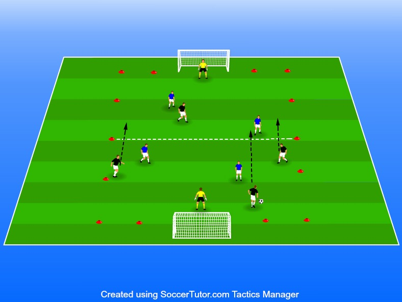

Spelförståelse samt se till att backarna förstår att de också är en del av anfallet. Fotboll är en lagsport och ingen individsport vilket betyder att man gör allting tillsammans. Antingen försvarar vi tillsammans eller anfaller tillsammans och det gäller samtliga spelare.
5 mot 5
Yta 25x20
Så många koner som krävs för
Spelet fungerar som ett normalt 5 mot 5 spel men för att ett mål ska en spelyta (Helst platta koner för mittlinje) godkännas måste hela ens egna lag exklusive målvakt vara över halva plan
Detta gör att spelarna lär sig att flytta med laget
Många spelare i yngre åldrar tycker att spela back är tråkigt men här försöker vi få de att förstå rollens vikt och att det faktiskt kan vara roligt
Matcherna ska vara runt 3-4 minuter långa sen vilar man i 30 sekunder till 1 minut för att hålla bolltempot uppe under själva matchspelet.